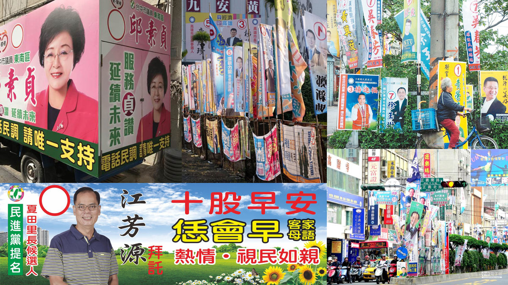
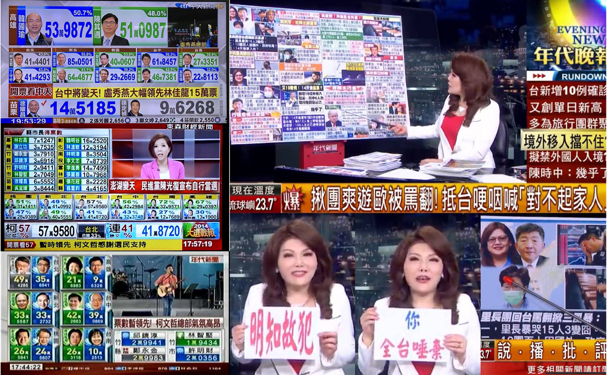
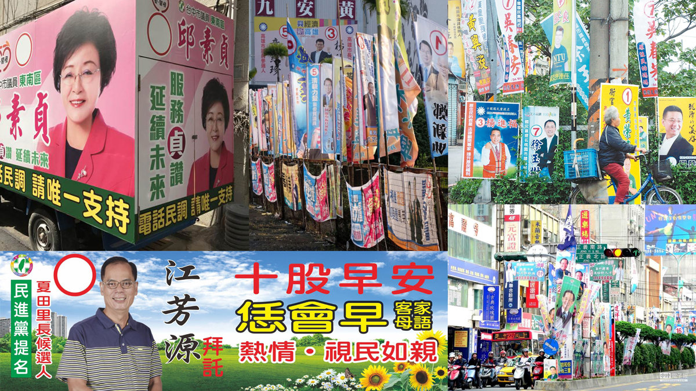
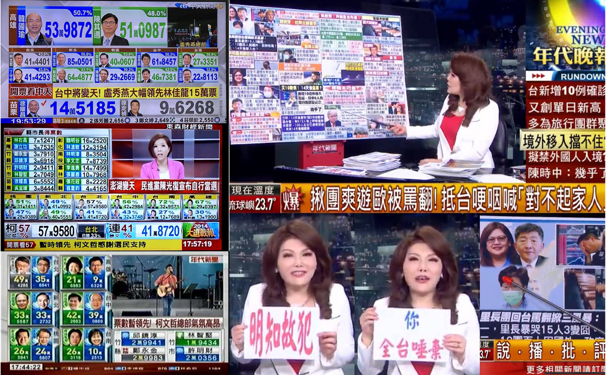

fixxxion TV
website
archive
interactive media
“fixxxion TV” is a disturbing, bombastic, grandiose, gamblingling and 100% virus-infected campaign website for 2020 election.
This is actually some real fun I had last semester for a project about “resilience of archive”. The class went to International Institute of Social History in Amsterdam and looked for treasures in those old archival boxes. I found these dusty photographs of dutch politicians which captured the moments of them giving speeches. I wanted to make the moments “alive” again by spiking them with some cheap and modern flashiness.
So I studied their persona and their political messages at their time, performed them with my body and brought them in a form of TV programme/website with the visual language which I borrowed from Taiwanese campaign flags/TV layout.
I lived in places where you barely see any evidences of organic, self-initiated design in political campaign. The visual strategy develops from a same system of propagandist customs directed by the same political party. This hegemony kills the possibilities of design of people’s own tone. A local survey shows that Taiwan’s election flags are seen as the ugliest urban element but I still find its charm. They are wild and cute in all senses…
This is actually some real fun I had last semester for a project about “resilience of archive”. The class went to International Institute of Social History in Amsterdam and looked for treasures in those old archival boxes. I found these dusty photographs of dutch politicians which captured the moments of them giving speeches. I wanted to make the moments “alive” again by spiking them with some cheap and modern flashiness.
So I studied their persona and their political messages at their time, performed them with my body and brought them in a form of TV programme/website with the visual language which I borrowed from Taiwanese campaign flags/TV layout.
I lived in places where you barely see any evidences of organic, self-initiated design in political campaign. The visual strategy develops from a same system of propagandist customs directed by the same political party. This hegemony kills the possibilities of design of people’s own tone. A local survey shows that Taiwan’s election flags are seen as the ugliest urban element but I still find its charm. They are wild and cute in all senses…
framework:
work developed in the school project
"The Resilience of Archives" by Hannes Bernard and Matthias Kreutzer
 


